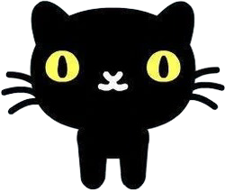
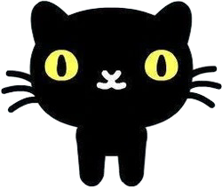

| Concurso de disfraces (Papá Noel) | Fomentar creatividad y espíritu navideño | Estudiantes (todos los niveles) | 19/12/2025 | Aportes voluntarios |
| Concurso mejor decoración de aulas | Promover trabajo en equipo y ambientación festiva | Estudiantes y comunidad | 19/12/2025 | Presupuesto inicial + reciclables |
| Recolección de juguetes | Incentivar solidaridad y conciencia social | Niños de escasos recursos | 19/12/2025 | Donaciones voluntarias |
| Función de cine + día deportivo | Recreación y salud física | Estudiantes (todos los niveles) | 22–23/01/2026 | Venta de snacks y entradas |
| Stand de fotos (San Valentín) | Fomentar convivencia y compañerismo | Comunidad educativa | 12/02/2026 | Aportes + ventas |
| Buzón secreto | Promover expresión de afecto positivo | Estudiantes | 12/02/2026 | Materiales reutilizables |
| Venta de rosas y chocolates | Recaudar fondos + emprendimiento | Consejo Estudiantil | 12/02/2026 | Ingresos por ventas |
| Evento carnavalero | Recreación controlada y disciplina grupal | Estudiantes | 13/02/2026 | Aportes voluntarios |
| Presentación de grupo de baile | Promover talento artístico | Comunidad educativa | 13/02/2026 | Fondos propios |
| Serenata y oratoria (Día de la Mujer) | Reconocer papel de la mujer | Mujeres de la institución | 09/03/2026 | Fondos previos |
| Presente para las mujeres | Expresar agradecimiento | Mujeres | 09/03/2026 | Ventas de San Valentín |
| Conferencia: La mujer | Importancia de la mujer en la sociedad | Comunidad educativa | 09/03/2026 | Recursos institucionales |
| Presente para docentes | Reconocer labor docente | Docentes | 10/04/2026 | Rifas y ventas |
| Presente para madres | Celebrar amor maternal | Madres | 10/05/2026 | Fondos acumulados |
| Sorteo PC Gamer (Día de la Familia) | Fomentar integración familiar | Familias y estudiantes | 15/05/2026 | Patrocinadores + fondos |
| Evento Día del Niño | Recreación y alegría infantil | Niños (básica) | 01/06/2026 | Ventas + patrocinios |
| Concurso de carteles ambientales | Promover conciencia ecológica | Comunidad educativa | 05/06/2026 | Reciclables |
| Prevención del alcoholismo | Fomentar vida sana | Básica superior y bachillerato | 12/01/2026 | Recursos institucionales |
| Prevención cigarrillo electrónico | Concientizar sobre salud | Básica superior y bachillerato | 30/01/2026 | Recursos institucionales |
| Conferencia: Liderazgo y Autoestima | Impulsar liderazgo desde la autoestima | Comunidad educativa | 26/03/2026 | Recursos institucionales |
 
